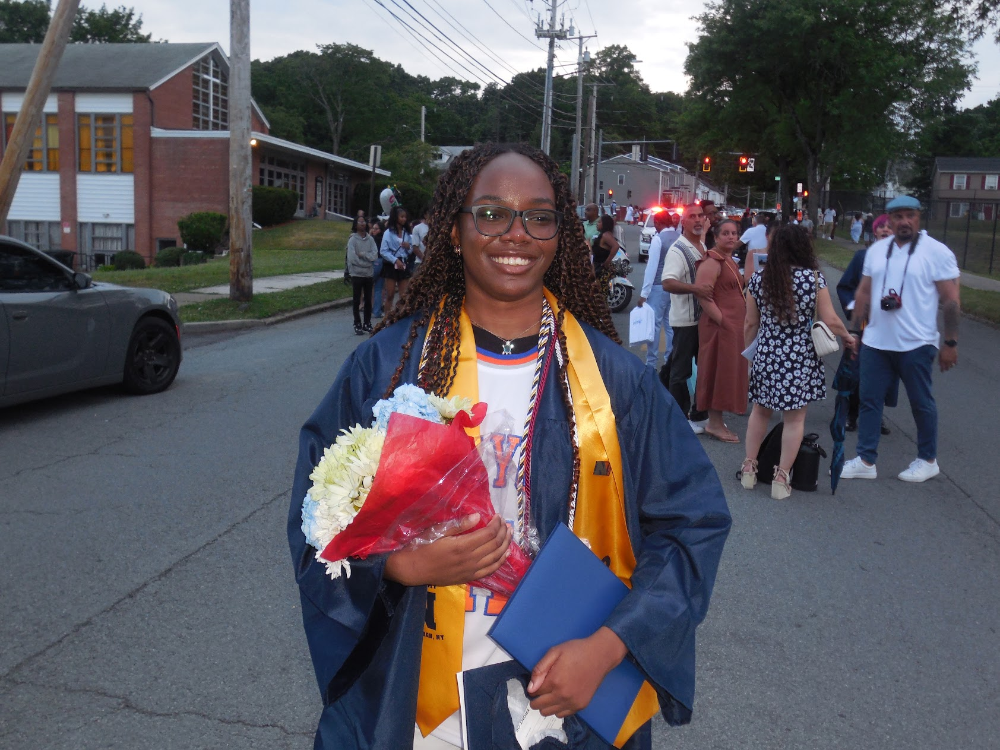

I’m a first-year Cybersecurity student at Stevens Institute of Technology from Newburgh, New York. I first explored network defense and system security through CyberPatriot, where I served as team captain for three years and helped my team earn a third-place finish in New York State’s Platinum tier. Since then, I’ve built hands-on experience in IT consulting, supporting clients as they maintain systems, troubleshoot software, and improve security. On campus, I write for The Stute and have served in student government leadership. I’m always looking for ways to keep learning, contribute to my community, and make technology work better for people.
I’d love to hear from youCybersecurity student
Chrystiella
Mensah
A. James Clark Scholar Cybersecurity Student & Analyst
I’m a first-year cybersecurity student at Stevens Institute of Technology from Newburgh, New York, passionate about network defense, emerging technology, and building meaningful skills in the security field.

A little introduction
About me.
Interests
What I enjoy
Cybersecurity
I’m especially interested in network defense, system security, and the practical work of protecting digital environments.
Film & Television
I enjoy character-driven dramas, especially Better Call Saul, for its thoughtful writing and complex stories.
Basketball
As a Knicks fan, I enjoy the strategy, teamwork, and energy that make basketball engaging.
Gaming
Minecraft is a favorite for its open-ended building and exploration, combining creativity with problem-solving.
Music
I enjoy exploring music across a wide range of genres and often turn to it for focus and inspiration.
Food & Exploration
I like trying new places, discovering local favorites, and exploring different cuisines.
Learning by doing
Experience & leadership.
Hands-on work, student leadership, and campus communities that continue to shape my path:
-
Opinion Columnist, The Stute
Writing opinion columns for Stevens’ student newspaper. Read my articles
-
IT Consultant
Helping clients maintain systems, troubleshoot software, optimize performance, and enhance security.
-
VR Game Design Instructor
Led VR-based lessons for young students, including technical setup and hands-on learning activities.
-
VR Game Design Assistant
Supported instructors with VR lesson setup and activities introducing students to game design.
-
CyberPatriot Team Captain
Captained my team for three years and helped secure third place in New York State’s Platinum tier.
-
Student Government
Served in student government leadership roles and contributed to my school community.
-
Campus organizations
Member of the National Society of Black Engineers (NSBE) and the Black Student Union (BSU).